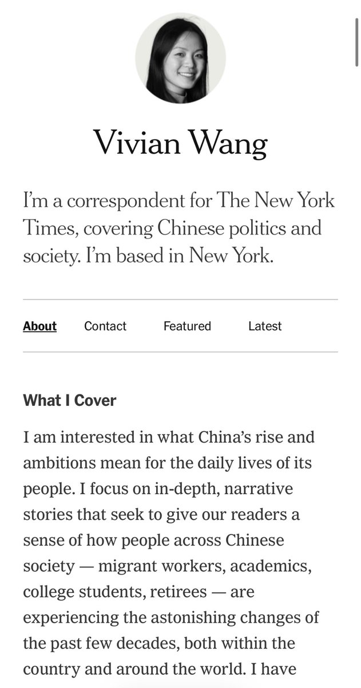
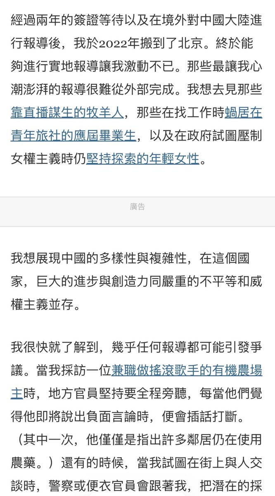
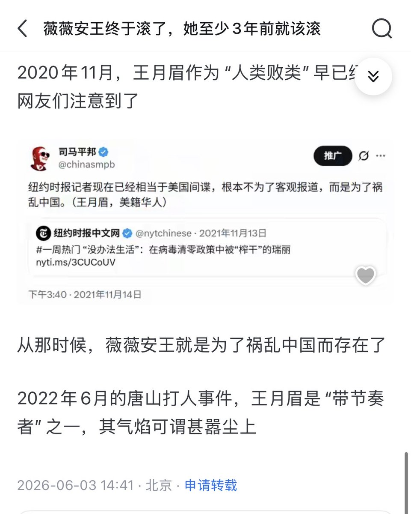

The Raven in the Rain🏳️🌈
@Raincandy_1937
RT @CapybaraHa84396: 今天想和大家分享女性故事：
纽约时报前驻华女记者 Vivian Wang 王月眉
擅长中国普通人的视角，长期关注在政府试图压制女权主义时仍坚持探索的女性
新闻作品：铁链女、唐山烧烤打人案、贝震颖为营救编程随想而公开奔走
2021年获普…



FeminismPedia 女性健康小百科
@CapybaraHa84396
今天想和大家分享女性故事：
纽约时报前驻华女记者 Vivian Wang 王月眉
擅长中国普通人的视角，长期关注在政府试图压制女权主义时仍坚持探索的女性
新闻作品：铁链女、唐山烧烤打人案、贝震颖为营救编程随想而公开奔走
2021年获普利策奖
而在洼地蝻媒体人嘴里只有辱女词和一句“带节奏”，就像个小丑 https://t.co/mmYxKUH04y